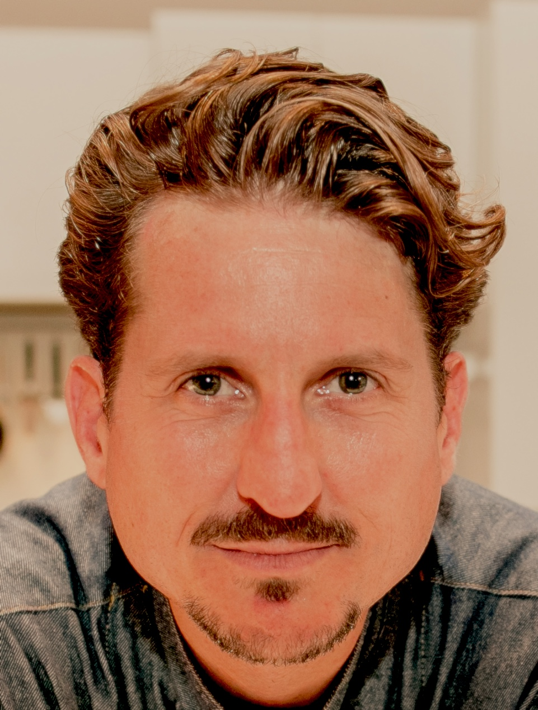

We help impact-focused SMEs and NGOs in Vienna build clear AI strategies, assess their readiness, and train their teams — without hype, without waste.
Wir helfen impact-orientierten KMUs und NGOs in Wien, klare KI-Strategien zu entwickeln, ihre Bereitschaft zu bewerten und ihre Teams zu schulen – ohne Hype, ohne Ressourcenverschwendung.
Every week brings new AI tools and contradictory advice. It's hard to separate what matters from what's marketing.
Jede Woche bringt neue KI-Tools und widersprüchliche Ratschläge. Es ist schwer, das Wesentliche vom Marketing zu trennen.
As an impact organisation, you can't afford AI solutions that compromise ethics, privacy or your mission.
Als Wirkungsorganisation können Sie sich keine KI-Lösungen leisten, die Ethik, Datenschutz oder Ihre Mission gefährden.
Lean teams don't have weeks to research, pilot and evaluate AI tools. You need clear guidance, fast.
Schlanke Teams haben keine Wochen, um KI-Tools zu recherchieren, zu testen und zu evaluieren. Sie brauchen klare Orientierung – schnell.
We offer two focused service lines designed specifically for SMEs, NGOs and impact-driven organisations in the DACH region.
Wir bieten zwei fokussierte Leistungsbereiche, die speziell für KMUs, NGOs und wirkungsorientierte Organisationen im DACH-Raum entwickelt wurden.
A structured evaluation of where your organisation stands today — and a clear roadmap for where AI can create the most value, with least risk.
Eine strukturierte Bewertung des Status quo Ihrer Organisation – und eine klare Roadmap, wo KI den größten Mehrwert bei geringstem Risiko schaffen kann.
Hands-on workshops that give your team the confidence to use AI tools effectively, responsibly and immediately — tailored to your sector and workflows.
Praxisorientierte Workshops, die Ihrem Team die Kompetenz geben, KI-Tools effektiv, verantwortungsvoll und sofort einzusetzen – zugeschnitten auf Ihren Sektor.
A four-step engagement designed to deliver clarity quickly and impact sustainably.
Ein vierstufiger Prozess, der schnell Klarheit und nachhaltige Wirkung erzielt.
A free 45-minute conversation to understand your organisation, goals and current AI landscape.
Ein kostenloses 45-minütiges Gespräch, um Ihre Organisation, Ziele und die aktuelle KI-Landschaft zu verstehen.
We assess your readiness, processes and team — identifying where AI creates value and where risks lie.
Wir bewerten Ihre Bereitschaft, Prozesse und Ihr Team – und identifizieren, wo KI Mehrwert schafft und wo Risiken liegen.
You receive a clear, written roadmap with prioritised actions, tool recommendations and a responsible use framework.
Sie erhalten eine klare, schriftliche Roadmap mit priorisierten Maßnahmen, Tool-Empfehlungen und einem verantwortungsvollen Nutzungsrahmen.
We train your team on the selected tools and workflows — building real capability, not just awareness.
Wir schulen Ihr Team in den ausgewählten Tools und Workflows – und bauen echte Kompetenz auf, nicht nur Bewusstsein.
We're not a tech vendor. We're an independent advisor with deep roots in sustainability, international development and innovation — which means our AI guidance puts your mission first.
Wir sind kein Technologieanbieter. Wir sind ein unabhängiger Berater mit tiefen Wurzeln in Nachhaltigkeit, internationaler Entwicklung und Innovation – unsere KI-Beratung stellt Ihre Mission in den Mittelpunkt.
Values-first approach — we won't recommend tools that compromise your ethics or privacy standards
Werteorientierter Ansatz — wir empfehlen keine Tools, die Ihre Ethik- oder Datenschutzstandards gefährden
Sector fluency — we speak NGO, SME, and impact-investor language, not just tech
Sektorkenntnisse — wir sprechen NGO-, KMU- und Impact-Investor-Sprache, nicht nur Tech
Independent advice — no commissions, no vendor relationships, no conflicts of interest
Unabhängige Beratung — keine Provisionen, keine Anbieterbeziehungen, keine Interessenkonflikte
Vienna-based — we're in your time zone, we know the Austrian regulatory landscape, and we can meet in person
Wien-basiert — wir sind in Ihrer Zeitzone, kennen die österreichische Regulierungslandschaft und können uns persönlich treffen
Trusted by organisations including
Vertrauen von Organisationen wie

Founder, Allmende Consulting GmbH · Vienna
Gründer, Allmende Consulting GmbH · Wien
With over 17 years working at the intersection of sustainability, innovation and international development — including roles at UNESCO, UNICEF, UNIDO and FAO — Matteo brings a rare combination of strategic depth and practical experience to AI adoption for purpose-driven organisations.
Mit über 17 Jahren Erfahrung an der Schnittstelle von Nachhaltigkeit, Innovation und internationaler Entwicklung – darunter Tätigkeiten bei UNESCO, UNICEF, FAO und UNIDO – bringt Matteo eine seltene Kombination aus strategischer Tiefe und praktischer Erfahrung in die KI-Adoption für wirkungsorientierte Organisationen.
He is a contributor to the UN Sustainable Development Goals framework, former Board member of the World Summit Awards, and founder of Allmende Consulting and Mychef. He is fluent in English, Italian, French, Spanish and German.
Er ist Mitgestalter des UN-Rahmens für die Nachhaltigkeitsziele, Vorstandsmitglied der World Summit Awards und Gründer von Allmende Consulting und Mychef. Er spricht fließend Englisch, Italienisch, Französisch, Spanisch und Deutsch.
Book a free 45-minute discovery call. No sales pitch — just an honest conversation about where AI can help you most.
Buchen Sie ein kostenloses 45-minütiges Erstgespräch. Kein Verkaufsgespräch – nur ein ehrlicher Austausch darüber, wo KI Ihnen am meisten helfen kann.
Based in Vienna · Available across Austria & DACH region · Remote consultations worldwide
In Wien ansässig · Verfügbar in ganz Österreich & der DACH-Region · Remote-Beratung weltweit